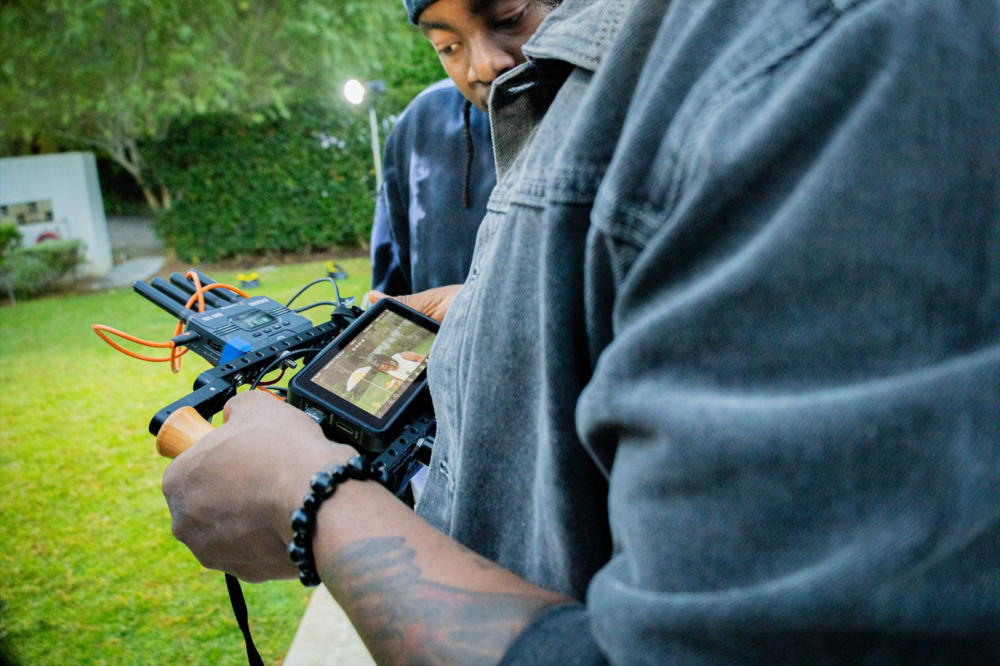

Music film · OMO by Vorstar
A world around the performance.
Treatment, casting, production design, camera and edit shaped one filmic language across Lagos and Cape Town.
Lagos + Cape Town Director & cinematographer
Creative Direction
I connect concept, image-making and campaign thinking so a project can hold its identity from the first treatment to the final release.

What I Direct
From music films and album worlds to artist identities and campaign rollouts, the work stays grounded in story, place and audience.
Music film · OMO by Vorstar
Treatment, casting, production design, camera and edit shaped one filmic language across Lagos and Cape Town.
Lagos + Cape Town Director & cinematographer

Album artwork · Fuiify Your Soul
Cover art, typography and tone create a visual entry point for the music and its cultural character.
Artist identity Cover & visual language

Campaign architecture
References, locations, schedule, production decisions and delivery dates become one shared working system.
Broadcast Radio Press Streaming Social

Artist identity
Portraiture, typography and narrative are shaped into a consistent identity that can travel across release materials.
Portraits Typography Editorial assets

Visual strategy
Camera movement, colour temperature, geography and pacing are planned together so separate locations still belong to one story.
Cross-border production One connected campaign

Production leadership
Behind-the-scenes records show the hands-on work: directing performance, reviewing camera and coordinating the team between takes.
Direction Camera Review Delivery
From Idea to Release
The strongest visual direction is not only a look. It is a series of decisions that protects the idea as the project moves through people, places and platforms.
Treatment, references, story, audience and visual language.
Casting, production design, direction, camera and performance.
Edit, titles, VFX, colour and sound brought into one final rhythm.
Assets and messaging adapted for broadcast, press, streaming and social.
Creative Direction Showcase
A documented cross-border campaign spanning treatment, art direction, production, post-production and release strategy. The work connected Lagos and Cape Town, then moved through broadcast, radio, press, streaming and social delivery.